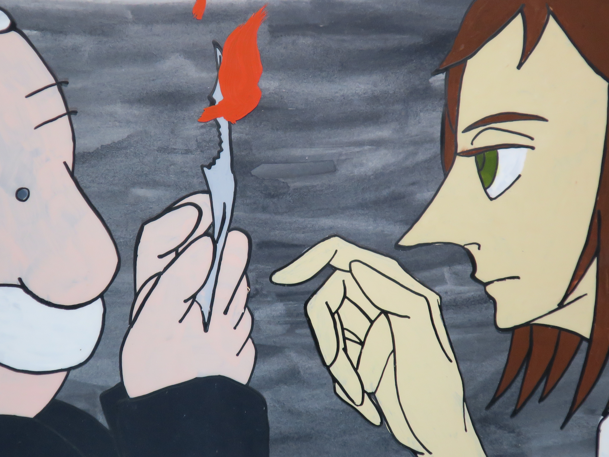

2019年 文化祭展示
2019/10/14
第64回武庫川女子大学文化祭にて、肥後ゼミ11期生の作品展示を行いました。私たち11期生が三回生前期で行ってきた研究の成果を作品として展示する場となりました。ほとんどのメンバーが個人での制作を行い、皆悪戦苦闘しながらもようやく展示に漕ぎ着けることができました。半年以上をかける長期での制作スケジュール管理や、展示会場をどのように設営するかといった準備など、悩まされることは沢山ありましたが個人としてもチームとしても大いに勉強できた経験となりました。 さらに自分の作品を多くの人に見て頂くことで、作品に対する客観的評価をもらうことができる貴重な機会ともなりました。それぞれが自らの研究の価値、反省点を見つけることができ、この先の研究を進める上で大きなヒントとなりました。
メンバーそれぞれの作品については、memberページにある各個人のプロフィールページにて詳しい紹介を閲覧することができます。
文化祭会場へ足を運んで頂いた方々、誠にありがとうございました。